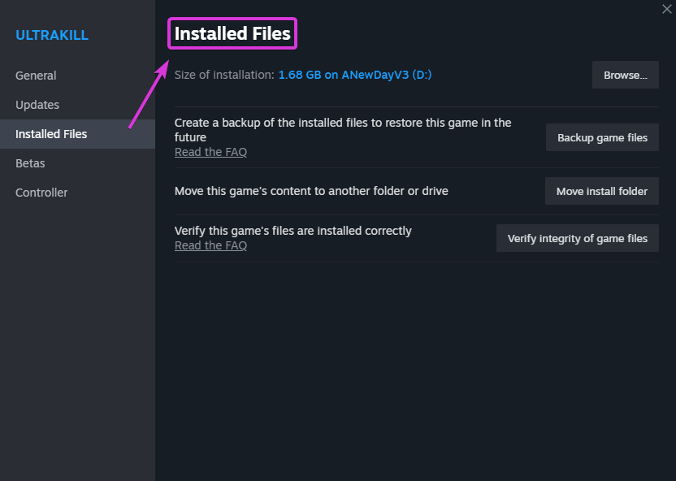

Finding your Game’s Executable and Game Directory
Each system and user setup is unique, resulting in diverse ReShade installations and behaviors.
If you’re having trouble locating your game’s executable, here’s a step-by-step guide to assist you.
Using Windows Task Manager (PREFERED)
Step 1: Accessing Task Manager
-
Option 1: Right-click the Windows Taskbar and select “Task Manager”.
 (Windows 11)
(Windows 11)  (Windows 10)
(Windows 10) -
Option 2: Press
Control + Alt + Deletesimultaneously, then select “Task Manager”. -
Option 3: Press
Control + Shift + Escapesimultaneously.
Step 2: Locating the Game’s Executable
- With your game running, switch to Task Manager using
Alt + Tab. - In the “Processes” tab, locate your game, right-click it, then choose
Open file location. (Windows 11)
(Windows 11)  (Windows 10)
(Windows 10)
This will highlight your game’s application in File Explorer.
Here, you can identify both the location and the specific executable of the game.
Finding the Executable through Steam
Step 1: Accessing Game Properties
- Open Steam and navigate to the “Library” tab.
-
Right-click your desired game (e.g., ULTRAKILL) and select “Properties”.

Step 2: Navigating to ‘Installed Files’
-
In the properties window, select the
Installed Filestab on the left.
-
Confirm you’re on the correct page by checking for the bold
Installed Filestext in the middle of the window.
Step 3: Browsing Game Files
-
In the
Installed Filessection, click on theBrowse...button.
-
A File Explorer window will open, showcasing the game’s files. Look for files with the
.exeextension—those are the game executables.
While this method shows you the game’s installation location, it may not always reveal the primary executable, especially if a game has multiple executables.
It’s essential to determine the correct one.